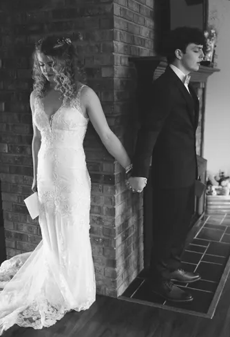
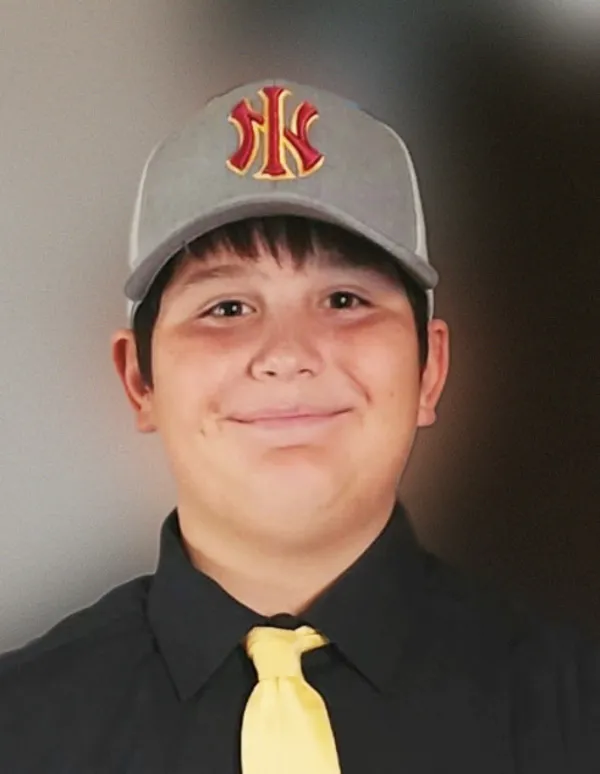
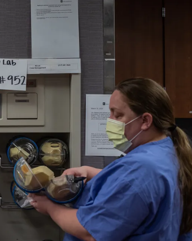

<!DOCTYPE html>
<html>
  <head>
    <meta charset="utf-8" />
    <title>Dana Benbow</title>
    <link rel="stylesheet" href="notable-work.css" />
    <link
      href="https://fonts.googleapis.com/css2?family=Montserrat:ital,wght@0,100..900;1,100..900&display=swap"
      rel="stylesheet"
    />
    <script
      src="https://kit.fontawesome.com/027f32df51.js"
      crossorigin="anonymous"
    ></script>
    <script src="index.js"></script>
    <meta name="viewport" content="width=device-width, initial-scale=1.0" />
  </head>
</html>

<body>
  <div class="layout">
    <nav>
      <input type="checkbox" id="check" />
      <label for="check" class="checkbtn">
        <i class="fa-solid fa-bars"></i>
      </label>
      <label class="logo"
        ><a class="logo-link" href="home.html">Dana Benbow</a></label
      >
      <ul>
        <li><a href="home.html">Home</a></li>
        <li><a href="about.html">About</a></li>
        <li><a class="active" href="#">Notable Work</a></li>
        <li><a href="contact.html">Contact</a></li>
      </ul>
    </nav>
    <div class="recent-work-container">
      Find my recent work on my
      <a
        class="recent-work-link"
        href="https://www.indystar.com/staff/2684006001/dana-hunsinger-benbow/"
        target="_blank"
      >
        Indystar</a
      >
      page.
    </div>
    <hr />
    <div class="notable-work-container">
      <div class="notable-work-item">
        <div class="item-title">Chase and Sadie</div>

        <div class="item-description">
          <div class="first">
            <div class="image-container">
              
              <div class="photographer-credit">@Amy Phipps Photography</div>
            </div>
            <br />

            Chase Smith was an elite high school swimmer, on a path to the
            Olympics. Sadie Mills was a star diver at a nearby school when the
            two met at a meet. The two started dating – Chase first making sure
            that Sadie knew he had battled an aggressive bone cancer – and fell
            madly in love.<br /><br />Not long after, the monster came calling
            again when Chase was diagnosed with terminal cancer and given months
            to live. In the hospital room, moments after Chase received his
            devastating diagnosis, his dad put his arm around his shoulder and
            whispered in his ear: "I'll help you buy a ring."<br /><br />Four
            days later, Chase married Sadie standing in the same driveway where
            he had given her their first kiss. They were two high school
            sweethearts with nothing to live for but one another and more time.
            <br /><br />They got 11 months ... 11 beautiful, heart wrenching,
            sad, wonderful months.<br /><br />Benbow and Pulitzer Prize-winning
            photojournalist Mykal McEldowney were granted access by the family
            to follow Chase and Sadie 11 months, chronicling their lives, love
            and marriage until Chase died at the age of 19 in his home with his
            beloved Sadie by his side.

            <br /><br /><a
              class="story-link"
              href="https://www.indystar.com/story/news/2021/04/05/tears-joy-love-heartbreak-every-story-chase-and-sadie-smith/7089568002/"
              target="_blank"
              >Here is their stories.</a
            ><br />
          </div>
          <br /><br />
        </div>

        <hr />
      </div>
      <div class="notable-work-item">
        <div class="item-title">Bullied to Death</div>
        <div class="item-description">
          <div class="first">
            <div class="image-container">
              
              <div class="photographer-credit">@Badger Family</div>
            </div>
            <br />

            Terry Badger III was a 13-year-old baseball phenom who was a
            superstar on the field but was bullied every day in the classroom.
            One spring afternoon, just days before his baseball season was about
            to begin, Terry decided the bullying was too much. In his mind, life
            wasn't worth living.<br /><br />Terry went into his bedroom,
            recorded a video that named his bullies and said they were to blame
            for what he was about to do. Terry turned off his phone and took his
            life.<br /><br />Benbow and Pulitzer Prize-winning photojournalist
            Mykal McEldowney went to the home of Terry II and Robyn Badger just
            days after they lost their son to suicide. The Badgers wanted to
            share their story in hopes of raising awareness of the effects of
            bullying and drawing attention to an anti-bullying bill appearing
            before the state legislature.<br /><br />The bill required, among
            other things, that a school corporation prioritize the safety of a
            bullying victim; that the school corporation report an act of
            bullying to the parents of the victim and alleged perpetrator; and
            that it makes allowances for school transfers depending on the
            severity of the bullying.<br /><br />After Benbow's story ran,
            Indiana lawmakers
            <a
              class="story-link"
              href="https://www.indystar.com/story/sports/2023/05/05/gov-eric-holcomb-signs-bullying-bill-after-13-yr-old-dies-by-suicide/70189992007/"
              target="_blank"
              >passed the bill and named it in the boy’s honor</a
            >
            — TB3, Terry’s nickname.<br /><br />State Rep. Vernon Smith (D-Gary)
            said the bill had been stuck until he brought a copy of Benbow's
            story on Terry Badger III to the Statehouse chambers and passed it
            to legislators: “I handed them a copy of Terry's story. I told them,
            'Read this until the end,'” Smith said. “I think that must have been
            what convinced (them) to pass this bill.”<br /><br />Story Links:<br /><a
              class="story-link"
              href="https://www.indystar.com/story/sports/2023/03/30/baseball-phenom-13-dies-by-suicide-his-parents-say-he-was-bullied/70034098007/"
              target="_blank"
              >Baseball phenom, 13, dies by suicide. His parents say he was
              bullied (indystar.com)</a
            ><br /><br /><a
              class="story-link"
              href="https://www.indystar.com/story/sports/2023/04/05/uncle-of-terry-badger-iii-who-died-by-suicide-testifies-on-bullying-in-statehouse/70078335007/"
              target="_blank"
              >Uncle of Terry Badger III, who died by suicide, testifies on
              bullying (indystar.com)</a
            ><br /><br /><a
              class="story-link"
              href="https://www.indystar.com/story/sports/2023/05/05/gov-eric-holcomb-signs-bullying-bill-after-13-yr-old-dies-by-suicide/70189992007/"
              target="_blank"
              >Gov. Eric Holcomb signs bullying bill after 13-yr-old dies by
              suicide (indystar.com)</a
            ><br /><br /><a
              class="story-link"
              href="https://www.indystar.com/story/sports/2023/07/02/before-suicide-at-13-his-dream-was-to-play-for-st-louis-cardinals/70367205007/"
              target="_blank"
              >Before suicide at 13, his dream was to play for St. Louis
              Cardinals (indystar.com)</a
            ><br />
          </div>
          <br /><br />
        </div>
        <hr />
      </div>
      <div class="notable-work-item">
        <div class="item-title">'Slow-rolling disaster'</div>
        <div class="item-description">
          <div class="first">
            <div class="image-container">
              
              <div class="photographer-credit">@Mykal McEldowney/IndyStar</div>
            </div>
            <br />
            At the height of the COVID-19 pandemic in the spring of 2020 when
            sports had been cancelled and the world was on hold in a collective
            panic, Benbow was pulled off the sports desk of her newspaper to
            cover the pandemic.<br /><br />As the virus hit a fever pitch, with
            deaths increasing by the second, Benbow and Pulitzer Prize-winning
            photojournalist Mykal McEldowney were given exclusive access inside
            the COVID-19 unit at IU Health Methodist Hosptial, one of the
            nation's leading trauma centers in Indianapolis.
            <br /><br />Benbow's story, titled "Slow-rolling disaster':
            Exclusive look inside the coronavirus units at IU Health Methodist
            Hospital" took readers inside the hospital, revealing the eerie
            unknown of a historic time in medical history.<br /><br />Story
            Link: <br /><a
              class="story-link"
              href="https://www.indystar.com/in-depth/news/health/2020/05/07/coronavirus-indiana-inside-iu-health-methodist-hospital/3036052001/"
              target="_blank"
              >Coronavirus Indiana: Go in IU Health Methodist Hospital COVID-19
              units (indystar.com) </a
            ><br />
          </div>
          <br /><br />
        </div>
      </div>
    </div>

    <!-- <div class="photo-gallery-container">
      
      
      <button class="w3-button w3-display-left" onclick="plusDivs(-1)">
        &#10094;
      </button>
      <button class="w3-button w3-display-right" onclick="plusDivs(+1)">
        &#10095;
      </button>
   </div> -->
    <div class="footer-container">
      <div class="link-icons">
        <a href="https://twitter.com/DanaBenbow" target="_blank"
          ></a>
        <a href="https://www.facebook.com/dana.hunsingerbenbow/" target="_blank"
          ></a>
        <a href="https://www.instagram.com/danabenbow/?hl=en" target="_blank"
          ></a>
        <a
          href="https://www.linkedin.com/in/dana-benbow-583388172/"
          target="_blank"
          ></a>
      </div>
    </div>
  </div>
</body>
